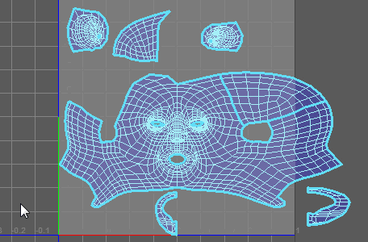

使用“对称 UV 工具”(Symmetrize UV Tool)，您可以在 UV 编辑器中沿 U 轴或 V 轴镜像组件。对称线显示为粗线。
若要打开“对称 UV 工具”(Symmetrize UV Tool)，请从“UV 工具包”(UV Toolkit)的部分中选择它，或从“UV 编辑器”(UV Editor)菜单中选择“工具 > 对称”(Tools > Symmetrize)。
选择“工具 > 对称”(Tools > Symmetrize) >  时，在“工具设置”(Tool Settings)窗口中将显示以下选项。
时，在“工具设置”(Tool Settings)窗口中将显示以下选项。
笔刷选项(Brush Options)
- 大小(Size)
- 指定受影响区域的大小。还可以通过按住 B 键并使用鼠标中键在“UV 编辑器”(UV Editor)中拖动来控制这一点。
- 镜像轴(Mirror Axis)
- 指定是要在 U 轴还是 V 轴上镜像 UV。
- 镜像轴位置(Mirror Axis Position)
- 在 UV 空间中指定受影响的 UV 的对称线。还可以通过按住 Ctrl 键并使用鼠标中键在“UV 编辑器”(UV Editor)中拖动来控制这一点。
- 镜像轴增量(Mirror Axis Increment)
- 指定在按住 Ctrl 键并使用鼠标中键拖动时要从上一位置捕捉“镜像轴位置”(Mirror Axis Position)的距离。将此值设置为 0 时会禁用捕捉。
- 整体应用壳(Flood Shell)
- 镜像笔刷下的整个壳。还可以通过按住 Ctrl 键并在“UV 编辑器”(UV Editor)中拖动来控制这一点。
注： 这适用于多个壳。